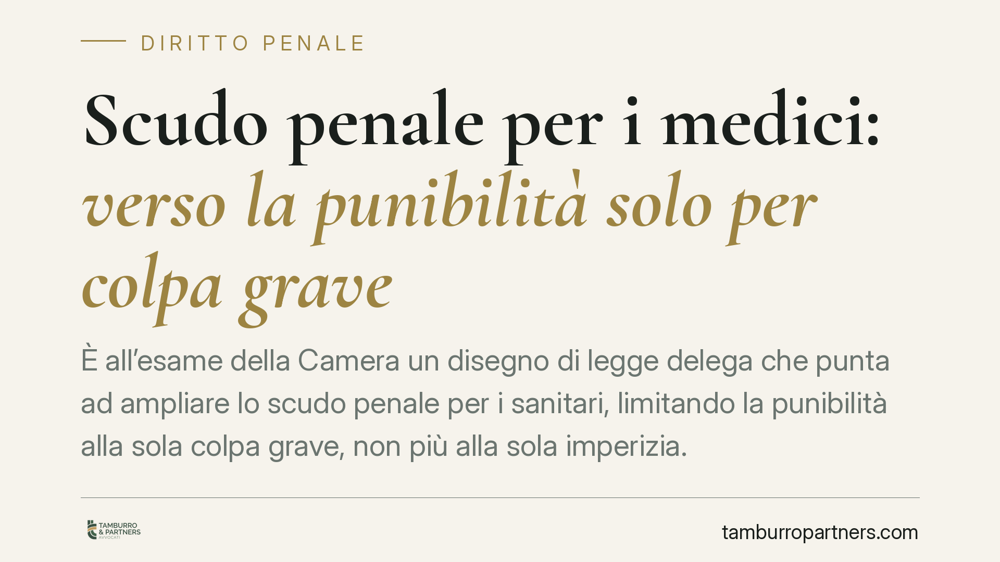

Scudo penale per i medici: verso la punibilità solo per colpa grave
È all'esame della Camera un disegno di legge delega che punta ad ampliare lo scudo penale per i sanitari, limitando la punibilità alla sola colpa grave, non più alla sola imperizia. Si tratta di un obiettivo di riforma, non di diritto vigente. La responsabilità civile e il diritto al risarcimento del paziente restano comunque fermi.

Il contesto
La responsabilità penale dei medici torna al centro del dibattito parlamentare. Un disegno di legge delega in esame alla Camera intende ridisegnare i confini della punibilità dei professionisti sanitari, muovendo verso un principio chiaro: punire solo la colpa grave.
È bene chiarire subito un punto, per evitare equivoci. Si parla di un disegno di legge delega: un provvedimento che fissa principi e criteri direttivi, delegando poi al Governo l'adozione dei decreti attuativi. Nulla di quanto segue è, allo stato, diritto in vigore. L'iter è ancora aperto e il testo può cambiare.
Inquadramento normativo
Il quadro attuale ruota attorno all'art. 590-sexies del codice penale, introdotto dalla legge 8 marzo 2017, n. 24 (cosiddetta legge Gelli-Bianco). La norma esclude la punibilità del sanitario, nei casi di morte o lesioni colpose, quando l'evento si è verificato per imperizia, purché siano state rispettate le raccomandazioni delle linee guida accreditate o, in mancanza, le buone pratiche clinico-assistenziali, adeguate al caso concreto.
I tre volti della colpa professionale vanno tenuti distinti:
- Imperizia: insufficiente preparazione o abilità tecnica; l'errore nell'esecuzione dell'atto medico.
- Negligenza: trascuratezza, disattenzione, omissione di cautele dovute.
- Imprudenza: avventatezza, scelta rischiosa non giustificata dalle circostanze.
Oggi lo scudo dell'art. 590-sexies copre, secondo l'interpretazione consolidata, la sola imperizia. Il perimetro applicativo della norma è stato chiarito dalle Sezioni Unite della Cassazione con la nota sentenza sul caso Mariotti (Cass., Sez. Un., n. 8770/2018), che ha definito presupposti e limiti della non punibilità.
Il disegno di legge delega punta ad andare oltre: estendere la logica dello scudo anche alla negligenza e all'imprudenza, confinando la rilevanza penale alla sola colpa grave. L'eventuale nuova disciplina attuativa dovrà essere introdotta dai decreti delegati; eventuali nuove disposizioni del codice penale saranno quelle effettivamente previste dai testi definitivi, oggi non ancora determinabili nel dettaglio.
Implicazioni pratiche
Per i professionisti sanitari la direzione è quella di un'area di rischio penale più circoscritta. Se la riforma arrivasse in porto nei termini annunciati, la condotta colposa lieve — anche per negligenza o imprudenza — resterebbe fuori dal perimetro della sanzione penale, con rilevanza ferma solo per la colpa grave.
Attenzione però a un passaggio decisivo: la responsabilità civile resta integra. Il paziente danneggiato continua a poter agire per ottenere il risarcimento. Lo scudo riguarda il versante penale, non quello risarcitorio: la struttura sanitaria e, nei limiti di legge, il singolo professionista restano esposti sul piano civile, a prescindere dalla gravità della colpa.
Per il paziente, dunque, la tutela economica non arretra. Ciò che cambierebbe è il piano penale, dove l'accertamento della responsabilità individuale diventa più selettivo.
Cosa fare in concreto
Per i professionisti sanitari:
- Documentate con cura ogni scelta clinica e l'aderenza a linee guida accreditate o buone pratiche: la tracciabilità è la prima difesa, oggi come con la futura disciplina.
- Non modificate protocolli e cautele operative sulla base di una riforma non ancora in vigore.
Per i pazienti:
- Conservate cartella clinica, referti e documentazione completa: restano la base per qualsiasi azione risarcitoria.
- Ricordate che il diritto al risarcimento in sede civile non dipende dalle sorti dello scudo penale.
Per entrambi:
- Consigliamo di seguire l'iter parlamentare attraverso le fonti ufficiali della Camera, senza dare per acquisito un testo ancora in discussione, e di valutare caso per caso con un professionista prima di assumere decisioni.
La riforma, se approvata, inciderà sull'equilibrio tra tutela del paziente e serenità operativa del medico. Ma finché i decreti delegati non vedranno la luce, il quadro applicabile resta quello attuale.
Contributo informativo a cura di Tamburro & Partners - Avv. Giuseppe Tamburro. Non costituisce parere legale.
Ogni condominio ha una storia a sé.
Se gestisci un'amministrazione e vuoi un confronto su una specifica questione condominiale, scrivi allo studio. Ti rispondiamo entro un giorno lavorativo.